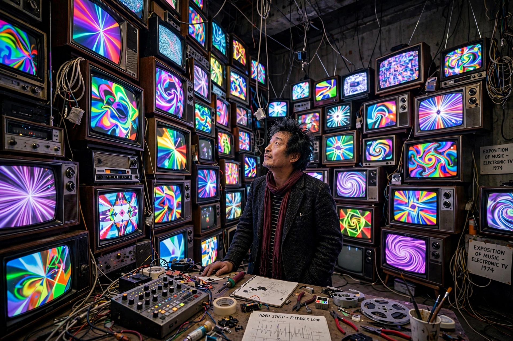

Nam June Paik (Korean: 백남준; July 20, 1932 – January 29, 2006) was a Korean artist widely credited as the founder of video art. Working in Germany and the United States and associated with the Fluxus movement, he coined ideas such as the 'electronic superhighway' and pioneered the use of televisions as sculptural and artistic media.

| Born | 20 July 1932, Seoul, Korea |
|---|---|
| Died | 29 January 2006, Miami, Florida, US |
| Known for | Video art, installation, performance |
| Movement | Fluxus, Neo-Dada |
| Spouse | Shigeko Kubota |
Paik's family fled Korea during the Korean War; he studied music and aesthetics in Tokyo, then moved to West Germany, where he met Karlheinz Stockhausen, John Cage and Joseph Beuys and joined Fluxus. His 1963 solo show in Wuppertal, 'Exposition of Music – Electronic Television', is often cited as the birth of video art. In New York he collaborated with cellist Charlotte Moorman on performances such as TV Bra for Living Sculpture and Opera Sextronique.
TV Buddha (1974), TV Garden (1974), the satellite broadcasts Good Morning, Mr. Orwell (1984), Bye Bye Kipling (1986) and Wrap Around the World (1988), and monumental video walls such as The More the Better (1988) in Seoul. He popularised the phrase 'electronic super highway' for future telecommunications networks. Major retrospectives were held at the Whitney, the Guggenheim and Tate Modern.